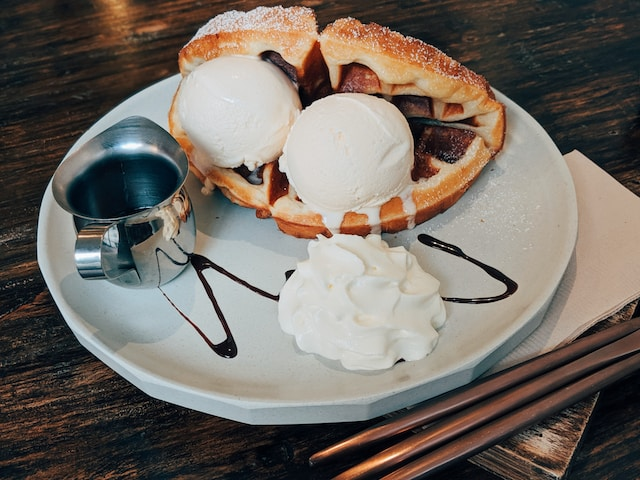

Back to Home
Vanilla Ice Cream

The Only Ice Cream Recipe You'll Ever Need
This silky, luscious and very classic custard can be used as the base for any ice cream flavor you can dream up. These
particular proportions of milk and cream to egg yolk will give you a thick but not sticky ice cream that feels decadent
but not heavy. For something a little lighter, use more milk and less cream, as long as the dairy adds up to 3 cups. You
can also cut down on egg yolks for a thinner base, but don't go below three.
Ingredients
- Yield: About 1½ pints
- 2cups heavy cream
- 1cup whole milk
- ⅔cup sugar
- ⅛teaspoon fine sea salt
- 6large egg yolks
Directions
- In a small pot, simmer heavy cream, milk,
sugar and salt until sugar completely
dissolves, about 5 minutes. Remove pot
from heat. In a separate bowl, whisk
yolks. Whisking constantly, slowly whisk
about a third of the hot cream into the
yolks, then whisk the yolk mixture back
into the pot with the cream. Return pot
to medium-low heat and gently cook until
mixture is thick enough to coat the back
of a spoon (about 170 degrees on an
instant-read thermometer).
- Strain through a fine-mesh sieve into a
bowl. Cool mixture to room temperature.
Cover and chill at least 4 hours or
overnight. Churn in an ice cream machine
according to manufacturers instructions.
Serve directly from the machine for soft
serve, or store in freezer until needed.